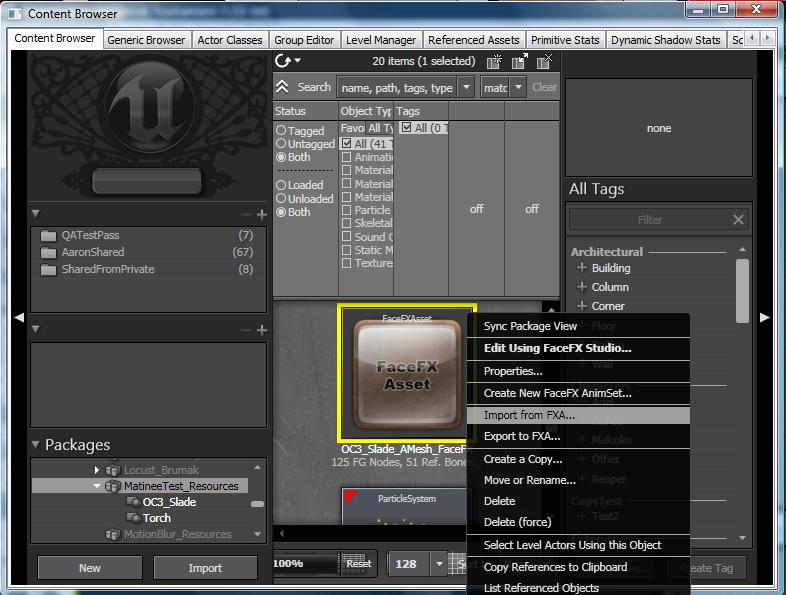

UDN
Search public documentation:
FaceFXPluginWorkflowKR
English Translation
日本語訳
中国翻译
Interested in the Unreal Engine?
Visit the Unreal Technology site.
Looking for jobs and company info?
Check out the Epic games site.
Questions about support via UDN?
Contact the UDN Staff
日本語訳
中国翻译
Interested in the Unreal Engine?
Visit the Unreal Technology site.
Looking for jobs and company info?
Check out the Epic games site.
Questions about support via UDN?
Contact the UDN Staff
UE3 홈 > FaceFX 얼굴 애니메이션 > FaceFX 플러그인 작업방식
FaceFX 플러그인 작업방식
문서 변경내역: Doug Perkowski? 작성.
개요
FXA 파일의 내용
- 뼈의 포즈 및 참조 포즈
- Face Graph 노드와 그 링크들
- 모든 애니메이션에 대한 애니메이션 키
- 음운 및 단어의 타이밍 정보
- Face Graph 노드의 위치
- 노드 그룹
- FaceFX Studio에서만 사용되고 게임에서는 사용되지 않는 데이터
FXA 파일 임포트 및 익스포트

플러그인에서 FXA 파일 변경하기
- 플러그인에서 새 참조 포즈를 익스포트할 때는, 반드시 모든 뼈의 포즈들을 다시 익스포트 하십시요.
- FXA 파일은 FaceFX Asset의 작은 부분만을 함유하고 있을 뿐입니다. 그러므로 이 파일이 FaceFX Asset의 "백업" 이라고 생각하면 안됩니다.
- UnrealEd 에서 FaceFX Asset을 변경했다면, 이를 임포트하지 마십시요. 바꾸어 말하면, FXA 파일을 익스포트한 다음에는 변경된 FXA 파일을 임포트해 올 때까지 FaceFX Asset으로 작업하는 것을 중단해야 합니다.